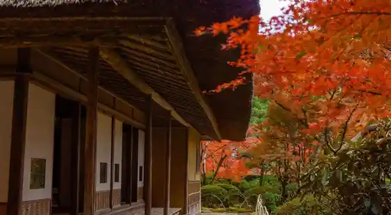
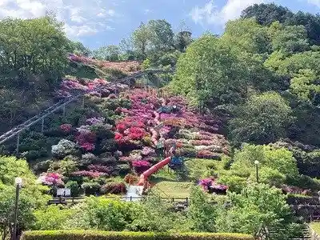
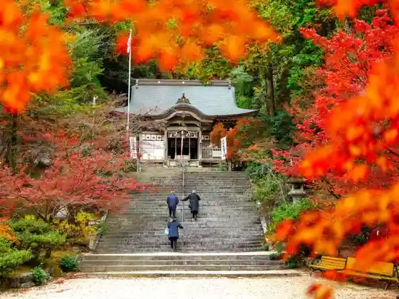

Kyunen Iori
Kanzaki, Saga · 0952-25-7230 · Official / source link

Takatori Yama Park
Kanzaki, Saga · 0952-51-9020 · Official / source link

Yakuruto Honsha Saga Kojo
Kanzaki, Saga · 0952-52-8960 · Official / source link
Niiyama Shrine
Kanzaki, Saga · 0952-37-9883 · Official / source link

Sefuri Yama
Kanzaki, Saga · 0952-59-2111 · Official / source link
Su no Piiku Guraunzu Yoshinogasato
Kanzaki, Saga · 0952-97-7188 · Official / source link
Nichi no Kuma Park
Kanzaki, Saga · 0952-37-3874 · Official / source link
Ume no Hana
Kanzaki, Saga · 0952-53-4114 · Official / source link
Wani Hakase Kensho Park
Kanzaki, Saga · 0952-37-0107 · Official / source link
Suisha no Sato Yugaku Kan
Kanzaki, Saga · 0952-52-1111 · Official / source link
Niiyama Park
Kanzaki, Saga · 0952-37-0107 · Official / source link
Shita Village Kojin Seika
Kanzaki, Saga · 0952-44-5167 · Official / source link
Kanzaki Tourism Association (Kanzaki Yugaku Kan)
Kanzaki, Saga · 0952-37-9882 · Official / source link
Yoko Takeshi Kuriiku Park
Kanzaki, Saga · 0952-37-3874 · Official / source link
Nagasaki Kaido Kanzaki Yado Kushita Miya
Kanzaki, Saga · 0952-37-0107 · Official / source link
Ito Gemboku Kyutaku
Kanzaki, Saga · 0952-52-1111 · Official / source link
Ozaki Ningyo
Kanzaki, Saga · 0952-37-0107 · Official / source link
Jotoku Tera (Shakunage)
Kanzaki, Saga · 0952-59-2317 · Official / source link
Takatori Yama Park Shiraki Chiku (Ajisai)
Kanzaki, Saga · 0952-37-0107 · Official / source link
Kanzaki Yakusho
Kanzaki, Saga · 0952-52-1111 · Official / source link